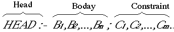

Machine: UNIX machine Environment: UNIX Source Code: 0.4 MB Language: C Documents: User's Manual (English/Japanese)
For example,
{f/a,g/b,h/X}.
cu-Prolog programs consist of the following Constrained Horn Clauses(CHC).

The Constraint part contains user-defined Prolog predicates such as
member(X,[ga,wo,ni]) or head_feature_principle(H,M,D).
The constraint solver uses unfold/fold transformation, which is well-known as a program transformation technique, with some heuristics.
A simple Japanese parser based on JPSG (Japanese Phrase Structure Grammar) is one of the most successful application of cu-Prolog. Various constraints of the constraint-based grammar formalism are naturally and elegantly described with PSTs and combinatorial constraints of cu-Prolog.